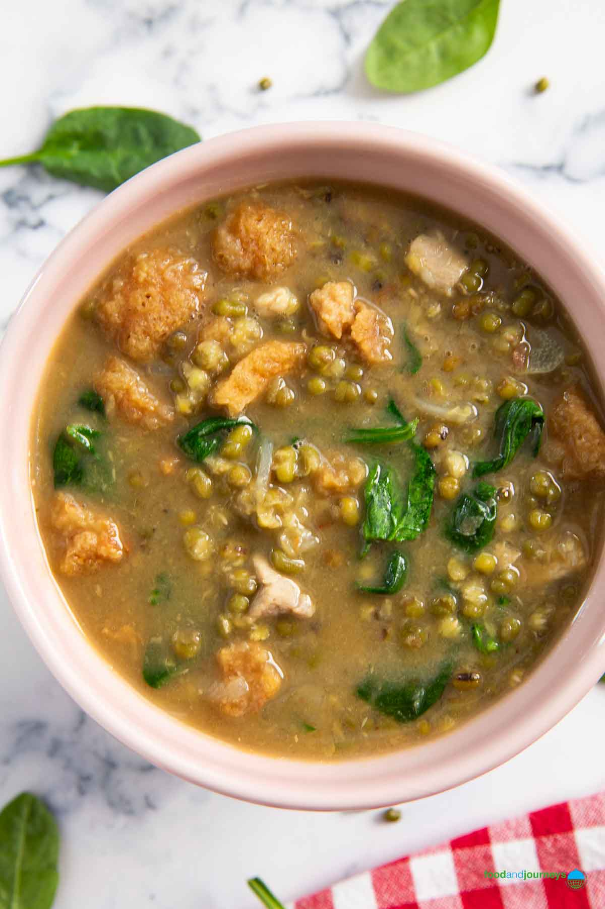

Home
Monggo

Sauteed mung beans
Another dish I learned to cook and love whilst at university, which has since continued to be mine and my partner's comfort food.
Ingredients:
- Mung beans
- Spinach
- Fish sauce
- Sliced cooked smoked mackerel
- Crushed garlic cloves
- Diced onion
- Diced ginger
- Diced tomato
- Salt and pepper to taste
- Vegetable cube
Steps:
- Thoroughly wash the mung beans.
- Place the mung beans into a deep pan and pour water until all beans are submerged.
- Let the mung beans come to a boil. Once boiling, turn down the heat to simmer until beans are soft.
- Whilst the beans are simmering, prepare the aromatics.
- Heat up oil in a pan and sautee the onions along with tomatoes and ginger.
- Add garlic and continue to sautee for a few minutes.
- Add the mung beans to the pan and let it simmer with the aromatics. Season with salt, pepper and fish sauce.
- Add some more water if you prefer the dish to be saucier.
- Crumble the vegetable cube and let it come to a gentle boil.
- Sprinkle the sliced cooked smoked mackerel and add the spinach leaves.
- Turn down the heat and continue to simmer until the spinach has wilted.
- Serve hot with white steamed rice. Enjoy!